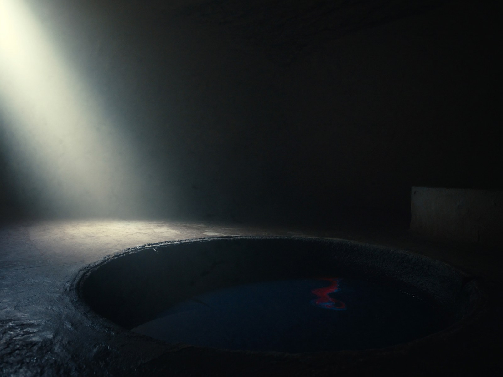

The studio
Small, on purpose.
Thornbury is a Singapore studio where design and engineering sit in the same head — the person who quotes your work is the person who builds it.
Who
We are deliberately not an agency org-chart. There is no account manager between you and the maker, no production line where your site is the fourteenth ticket of the sprint. The studio stays small so that every piece that ships has been held, entirely, by someone who cares whether it is good.
The trade is honest: we take on less work than a big shop, and we turn down work we cannot make excellent. What we accept gets the same treatment our own site got — including the willingness to kill our own drafts. Our front-page hero is the third version of itself; the first two are documented, post-mortemed, and public. That discipline is the product.

The standards
Real phones, real numbers
No page is called done on an emulator’s word. Every page we ship is measured on an actual device, and the number goes in the handover. This site holds 60 frames per second on a mid-range iPhone — measured, not estimated.
Kill your darlings, in writing
Work that isn’t good enough dies, and the reasons are written down where the next project can find them. A studio that can’t show you its dead ends is showing you marketing.
Legibility beats spectacle
No effect is allowed to fight the words. Visitors who prefer reduced motion get a site that respects that preference everywhere, automatically.
Nothing hand-faked
If a piece needs something we cannot make excellent ourselves, we license the real thing or design around it. No stock 3D pretending to be craft, no template pretending to be design.
You keep the keys
Source code, domains, analytics, accounts — yours from day one. If we ever part ways, you lose nothing but us.
The stack
Modern, boring where it should be, sharp where it counts: a structured component approach for the studio’s client builds; custom real-time graphics written WebGPU-first in one shader language, with a verified WebGL2 fallback so the experience holds on every browser — including the ones that don’t support the new thing yet. Performance budgets are set before design starts, and the site’s own numbers are part of its definition of done.
The same stack, standards and evidence discipline apply whether the engagement is a four-page company site or a flagship build.